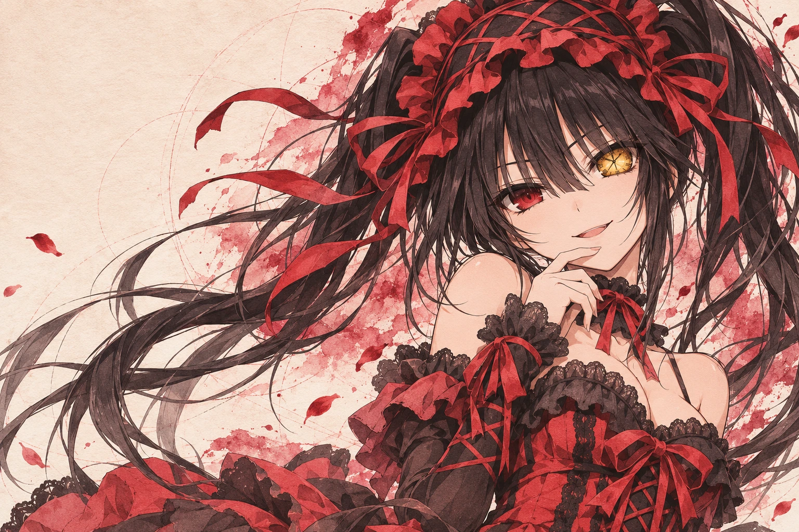
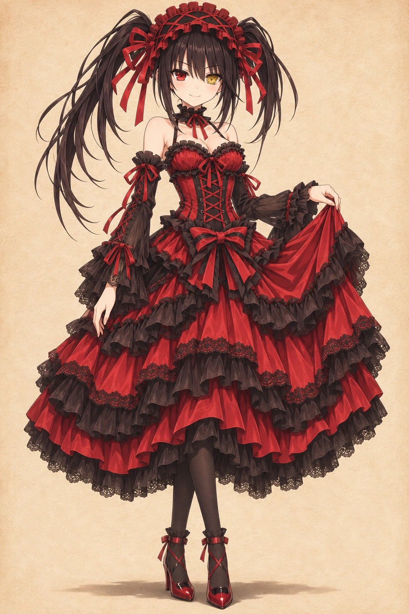
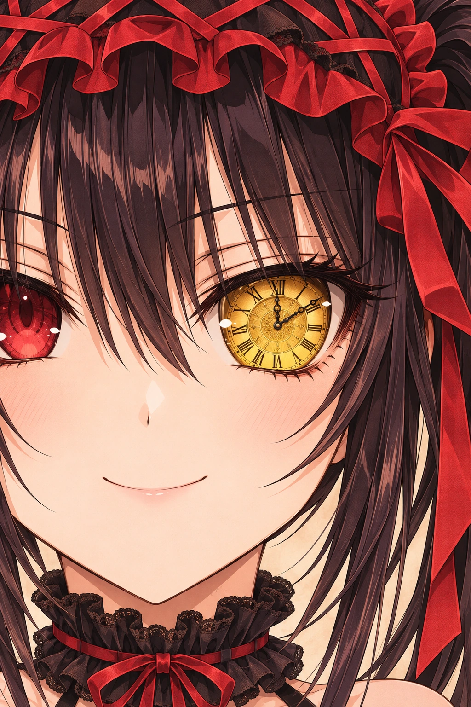
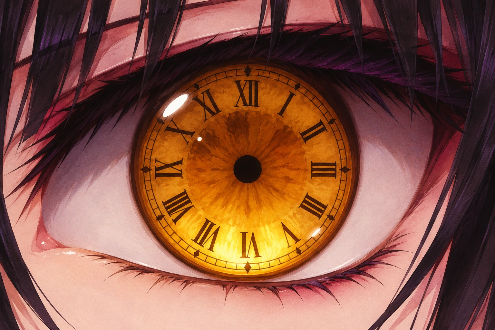

DATE A LIVE / SPIRIT NO. 03
Kurumi
Tokisaki.
時 崎 狂 三
She carries a clock in her left eye. In its golden hands lies the power to turn back time.
Explore her story02 / 06 ASTRAL DRESS
Lace &
crimson.
Black lace frames a bright scarlet dress. Trace the details up to her face and the symmetry breaks. One eye is red. The other keeps time.



03 / 06 THE ANGEL
Zafkiel.
A vast clock appears behind Kurumi. Each hour on its face holds a different power, and each use spends some of her own time.
Aleph
Time accelerates for the one she strikes.
04 / 06 THE DOUBLE
Afterimages.
Kurumi can call up earlier versions of herself. On this little rooftop, each shadow keeps the outline of the girl who cast it.
05 / 06 AN AUTUMN INTERLUDE
The still
hour.
A maple leaf catches on the hem of her dress. For one quiet moment on the walk home, Kurumi lets the afternoon pass.
06 / 06 THE SHADOW
Beyond
Nightmare.
The name follows her everywhere. Yet when Shido needs help, the Spirit he has every reason to fear sometimes steps out of the shadows to stand beside him.
Return to the beginning